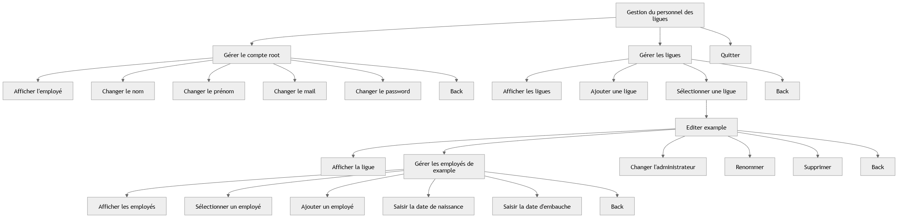
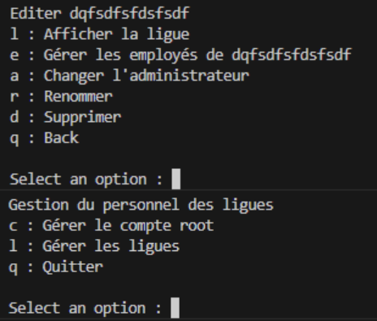

Projet M2L en Java
Description : Ce projet, fait en JAVA, propose la gestion des employés de ligues.
Il a été réalisé avec Kilian Junker.
Dans un premier temps, l'application a été faite sans interface graphique, avec juste la console.
Jusqu'ici, l'application offrait la possibilité de gérer les ligues(Création, ajout, modification et suppression) et
leurs employés(Création, ajout, édition et suppression).
Pour chaque ligue, on peut choisir, toujours en ligne de commande, un de ses employés comme administrateur.
s'il on n'en choisit aucun, c'est le super Admin qui administre la ligue.
Fonctionnalités
- Gestion des employés avec dates d'arrivée et de départ
- Gestion des salles et des équipements
- Système de réservation en ligne
- Authentification et rôles utilisateurs
Modification
Editer une ligue
Changer Admin
Retirer Admin
Gestion de l'employé
A l'ajoute d'un employé : saisir la Date inscription
Selectionnement d'un employé : Modifier ou supprimer l'employé
Exception date invalide ( futur ou passé )
Technologies utilisées
✔️ Java (Spring Boot) | ✔️ MySQL | ✔️ Git
Notre arbre heuristique
Notre mcd est le suivant :

Interface du projet (version terminal) :
Lien vers le code source :
Contact
Si vous avez des questions ou souhaitez contribuer, contactez-moi à assehnoune.youssef@gmail.com.